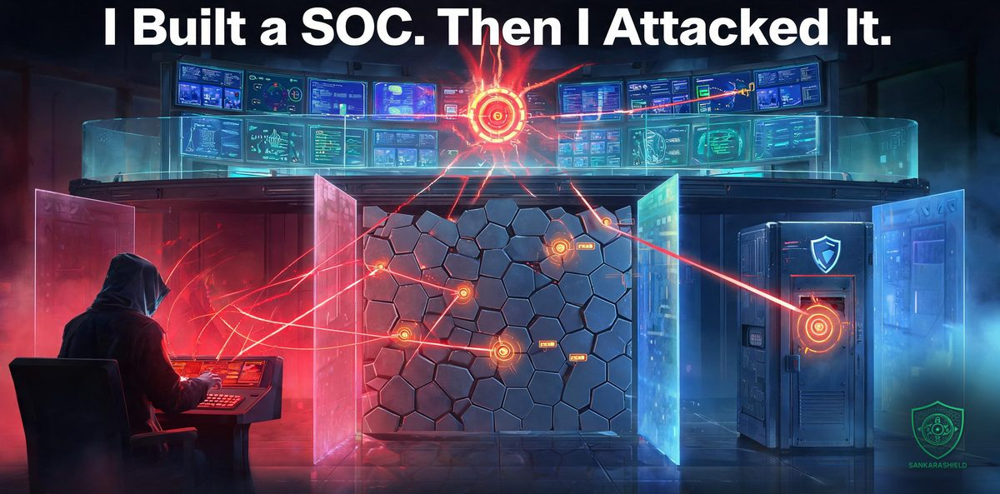

I built a SOC and attacked it: what a home lab taught me about firewall, IDS and SIEM detection.

Most SOC labs stop at the screenshot of a dashboard. This one started there. After building a segmented firewall, a network IDS and a SIEM on real virtual machines, I moved to the attacker's seat and asked one question: when someone actually attacks this network, which alerts fire, and which ones only exist on paper?
Every attack in the test plan was eventually detected. But three parts of the detection pipeline did not work the first time, and none of those failures were visible on the dashboard. They only appeared when real attack traffic went through the pipeline.
This brief walks through what was built, how it was attacked, what broke, and what any team running a firewall, an IDS and a SIEM can take from it. Everything described here is public: rules, signatures, decoders, attack scripts and evidence.
WHAT WAS BUILT
THREE SEGMENTS, ONE FIREWALL — a pfSense CE 2.7.2 firewall routes between three isolated networks: an attacker segment where Kali Linux lives, a victim segment with a Windows Server 2022 machine, and an admin segment that hosts the SIEM and the management workstation. A fourth interface gives outbound internet access through NAT.
THE ATTACKER IS CONTAINED BY DESIGN — five rules govern the attacker segment, evaluated top to bottom: DNS only through the firewall, block and log anything toward the admin network, block and log anything toward the firewall itself, allow and log everything toward the victim, allow the internet for tool updates. Everything else is dropped by default.
THE SIEM SITS OUT OF REACH — this is the most important design choice in the lab. The Wazuh manager lives on the admin network, which the attacker segment is explicitly blocked from. An intruder who lands on the attacker segment can generate noise, but cannot reach, delete or tamper with the logs that describe what they did.
A NETWORK IDS WITH SIGNATURES I CONTROL — Suricata 7 runs on the attacker interface in detection mode, with the ET Open and Snort community rule sets plus four custom signatures: an ICMP sweep toward the victim, a TCP SYN scan threshold, connection attempts to SMB, RDP and WinRM, and HTTP requests carrying the User-Agent of offensive tools such as sqlmap, nikto or nmap.
ONE PLACE TO LOOK — pfSense forwards its firewall log and the Suricata alerts to Wazuh 4.14 over syslog, from the admin interface only. A Wazuh agent on the Windows victim ships its security event log. Network and endpoint telemetry end up in the same SIEM, which is what makes correlation possible.
TESTED BEFORE TRUSTED — before any attack, every firewall rule was validated from Kali: the victim was reachable and every packet logged, the internet was reachable, while the firewall's web interface and the admin network were blocked and logged.
THE ATTACK
NETWORK DISCOVERY (T1018) — an ICMP sweep from Kali toward the victim segment. The custom Suricata signature fired and Wazuh raised it as a low-severity alert.
PORT SCANNING (T1046) — an nmap scan of the victim. Suricata flagged the SYN scan, and a Wazuh frequency rule built on the firewall's own pass log raised a level 10 alert when one source opened more than 20 connections in 30 seconds. The firewall log alone produced 194 pass events during the run: no analyst should read those one by one, which is exactly why the frequency rule exists.
REMOTE SERVICE ACCESS (T1021) — connection attempts to SMB, RDP and WinRM on the victim, the doors attackers use to move laterally. Level 10.
OFFENSIVE TOOLING (T1190) — HTTP requests carrying sqlmap, nikto and nmap User-Agents. Level 10.
PROBING THE FORBIDDEN ZONES — repeated attempts to reach the firewall and the admin network were blocked, and five blocks from the same source within one minute raised a level 10 alert.
THE CORRELATION — four or more IDS alerts from the same source within two minutes raised a level 12 alert: "attack in progress". Individually, each signal was minor. Together, they told a story.
ON THE ENDPOINT — two scenarios ran on the victim. A brute force of eight failed logons produced Windows event 4625 and escalated to a level 10 "multiple logon failures" alert (T1110). Then a new local account was created and added to the Administrators group, a classic persistence move (T1136, T1098), which raised a level 12 "Administrators group changed" alert. The account was deleted at the end of the scenario, and the cleanup was logged too.
WHAT BROKE, AND WHY IT MATTERS
THE SIEM COULD NOT READ THE FIREWALL — the first syslog messages from pfSense arrived in Wazuh and matched nothing. pfSense sends BSD syslog without a hostname field, so Wazuh's pre-decoder took the program name for the host, and none of the built-in pfSense or Suricata decoders matched. Switching the log format did not help. The fix was a set of custom decoders that match the message body itself, validated line by line with wazuh-logtest. The lesson: a log that is ingested is not a log that is parsed. A dashboard can show events arriving while every detection built on them stays silent.
THE RIGHT BLOCK, THE WRONG NAME — two firewall rules created within the same second received the same internal tracker ID. Traffic was correctly blocked, but the firewall log attributed the block to the rule that allows traffic toward the victim. In a real SOC, that log line would send an analyst investigating the wrong rule. Recreating the rule gave it a fresh tracker ID, and the re-test logged the block under the correct name.
THE MOST SEVERE ALERT NEVER FIRED — the level 12 correlation rule was first written to count matches of the parent Suricata rule. But it is the child rules, sorted by priority, that actually raise alerts, so the counter never moved. Matching on the rule group instead of the parent rule fixed it. Until that change, the most important alert in the lab simply did not exist, and nothing on the dashboard said so.
THE CLASSIC TEST NO LONGER WORKS — the website traditionally used to trigger a known IDS signature is now a parked domain and triggers nothing. Anyone relying on it to confirm that their IDS works would see silence and might conclude the sensor is healthy. This is why the lab relies on signatures it controls and on traffic it generates.
SMALLER TRAPS — Suricata needs hardware checksum and segmentation offloading disabled on pfSense to inspect packets correctly. In Wazuh, "action" is a static field and must be written as its own tag, or the analysis engine refuses to start. The Wazuh appliance runs in FIPS mode and rejects Ed25519 SSH keys, while ECDSA works.
WHAT THIS MEANS FOR YOUR SOC
TEST YOUR PARSERS BEFORE YOUR DASHBOARDS — events arriving in a SIEM prove that transport works, not that detection works. For every new log source, take a real line, run it through your decoders, and confirm that the fields your rules depend on are actually extracted.
PROTECT THE SIEM FROM WHAT IT WATCHES — if the segments you monitor can reach your log pipeline, an attacker can blind you. Put the SIEM on a management network, restrict who can send syslog to it, and treat any traffic toward it from a monitored segment as an alert in itself.
TRIGGER EVERY DETECTION AT LEAST ONCE — a correlation rule that has never fired is an assumption. Generate the exact traffic it is meant to catch, in a lab or a controlled window, and keep the evidence.
LOG LINES MUST POINT TO THE RIGHT RULE — analysts trust rule names. Audit them after bulk changes, and re-test a sample of blocks after every policy update.
CORRELATE, DO NOT COLLECT — 194 pass events on one scan is noise. One level 12 alert saying "several IDS alerts from one source in two minutes" is a lead. Frequency and correlation rules are where a SIEM starts earning its cost.
LIMITS OF THIS EXERCISE
This was a single home lab on VirtualBox, with one attacker, one victim and almost no background traffic. In production, the same rules would meet far more noise, and the thresholds would need tuning. Suricata ran in detection mode only, without blocking. The attacks were non-destructive probes and two endpoint scenarios, chosen to match the controls in place; exploitation, lateral movement with real credentials and command and control were not tested. The Wazuh appliance kept its default configuration apart from the custom rules, which would not be acceptable outside a throwaway lab.
THE BOTTOM LINE
The firewall, the IDS and the SIEM each worked on their own from day one. The detection only worked once real attack traffic had gone through all three, and once the three failures it exposed had been fixed. A detection you have never triggered is an assumption, not a control.
The firewall rules, Suricata signatures, Wazuh decoders and rules, attack scripts, MITRE ATT&CK mapping and screenshots of every run are on GitHub: https://github.com/ktf40858-stack/soc-firewall-ids-siem-lab
When did you last check that your SIEM can actually parse the logs it receives?